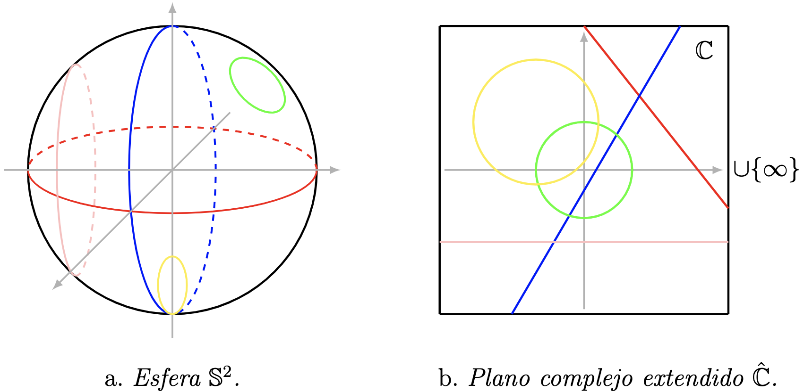

The study of meromorphic complex functions naturally leads us to add a new point to the complex plane $\mathbb{C}.$ We call this point infinity and denote it by the symbol $\infty$ This symbol was introduced by the English mathematician John Wallis (1616-1703), in his work titled Treatise of Algebra (Wallis), published in 1685.. We can endow this new set $\mathbb{C}\cup\{\infty\}$ with a topology, starting from the process known as the Alexandrov compactification. For a description of the general case we invite the reader to consult Dugundji, 8.4 Theorem, p. 246.
- The pair $(\widehat{\mathbb{C}}, \tau_{\infty})$ is a compact Hausdorff topological space.
- The pair $(\widehat{\mathbb{C}},i)$ is a compactification of $\mathbb{C},$ where $i:\mathbb{C}\hookrightarrow \widehat{\mathbb{C}}$ is the inclusion.
The topological space $\widehat{\mathbb{C}}$ is called:
Extended Complex Plane or Riemann Sphere.
Property 1. Evidently, $\emptyset \in \tau_{\mu}\subset \tau_{\infty}.$ On the other hand, $\emptyset=\widehat{\mathbb{C}}\setminus \widehat{\mathbb{C}}$ is compact in $\mathbb{C},$ therefore $\widehat{\mathbb{C}}\in \tau_{\infty}.$
Property 2. Take the elements $U_{1}$ and $U_{2}$ in $\tau_{\infty}.$ Let us verify that the intersection $U_{1}\cap U_{2}$ is in $\tau_{\infty}.$ We must study three cases.
Case 1. If the elements $U_{1}$ and $U_{2}$ belong to $\tau_{\mu}$, then $U_{1}\cap U_{2}\in \tau_{\infty}$ because $\tau_{\mu}$ is a topology. Consequently, $U_{1}\cap U_{2}\in \tau_{\mu}\subset \tau_{\infty}.$
Case 2. If $\infty\in U_{1}\cap U_{2},$ then the differences $\widehat{\mathbb{C}}\setminus U_{1}$ and $\widehat{\mathbb{C}}\setminus U_{2}$ are compact subsets of $\mathbb{C}.$ Since the finite union of compact sets is compact, then $(\widehat{\mathbb{C}}\setminus U_{1})\cup (\widehat{\mathbb{C}}\setminus U_{2})$ is a compact subset of $\mathbb{C}.$ Applying De Morgan's laws to the previous set, we have
Case 3. If $\infty\in U_{1}$ and $U_{2}\in\tau_{\infty}.$ Then $\infty \notin U_{1}\cap U_{2}.$ We rewrite the previous intersection set as follows
Property 3. Take the family $\{U_{i}\in \tau_{\infty}:i\in I\}$ and let us see that $\bigcup\limits_{i\in I}U_{i}\in \tau_{\infty}.$ If $U_{i}\in \tau_{\mu}$ for all $i\in I,$ we use the fact that $\tau_{\mu}$ is a topology and conclude that $\bigcup\limits_{i\in I}U_{i}\in \tau_{\mu}\subset \tau_{\infty}.$ On the other hand, if there exists $j'\in I,$ such that $\infty\in U_{j'},$ then we consider the set of indices $J=\{j\in I: \infty \in U_{j}\}.$ Then we rewrite the union set $\bigcup\limits_{i\in I}U_{i}$ as follows
We take complements in the previous equality and apply De Morgan's laws. Thus, we obtain
Note that $$\bigcap\limits_{j\in J}(\widehat{\mathbb{C}}\setminus U_{i})$$ is a compact and closed subset of $\mathbb{C}.$ Furthermore, $$\bigcap\limits_{i\in I\setminus J}(\widehat{\mathbb{C}}\setminus U_{i})$$ is a closed subset of $\mathbb{C}.$ Therefore, the difference set in equation \eqref{eq:t_plano_complejo_extendido_1} is a closed subset. Since every closed subset of a compact set is compact, we conclude that the difference
Let us verify that $\widehat{\mathbb{C}}$ is a Hausdorff space. Take points $z\neq w\in\widehat{\mathbb{C}}.$ If both points are in $\mathbb{C},$ then there exist open sets $U,V\in \tau_{\mu}\subset \tau_{\infty},$ such that $z\in U,$ $w\in V$ and $U\cap V=\emptyset.$ On the other hand, if $w=\infty,$ then we consider positive reals $0\lt r_{1}\lt r_{2}.$ Then, we construct the open balls $B_{r_{1}}(z)$ and $B_{r_{2}}(z)$ which are in $\tau_{\mu}.$ Note that the closure $\overline{B_{r_{2}}(z)}$ of the ball $B_{r_{2}}(z)$ is a compact set of $\mathbb{C}$ and its complement $V=\widehat{\mathbb{C}}\setminus \overline{B_{r_{2}}(z)}$ in $\widehat{\mathbb{C}}$ is an open set in $\tau_{\infty}$ that contains the point $\infty.$ By construction, we have $B_{r_{1}}(z)\cap V =\emptyset.$
Compactness. Consider an open cover $\mathcal{M}:=\{U_{\alpha}:\alpha \in \mathcal{A}\}$ for $\widehat{\mathbb{C}}.$ There exists an index $\beta \in \mathcal{A},$ such that the open set $U_{\beta}$ contains the point $\infty.$ Then the difference set $B=\widehat{\mathbb{C}}\setminus U_{\beta}$ is compact in $\mathbb{C}.$ Since $B$ is compact, there exists a finite number of open sets $U_{1},\ldots, U_{n}$ in $\mathcal{M}$ covering $B,$ for some $n\in \mathbb{N},$ i.e., $B=\bigcup\limits_{i=1}^{n}U_{i}.$ The family $\{U_{i},U_{\beta}: i\in\{1,\ldots,n\}\}$ is a finite open cover taken from $\mathcal{M},$ which covers $\widehat{\mathbb{C}}.$
The statement described in item (ii) is left as an exercise for the reader.
In the course of complex analysis, the concept of convergent sequence is usually studied in order to understand the continuity of complex-valued functions. The sequence of complex numbers $(z_{n})_{n\in\mathbb{N}}$ converges to $w\in\mathbb{C},$ if for every positive real $ \varepsilon>0$ there exists a natural number $N_{\varepsilon}\in\mathbb{N}$ such that if $m\geq N_{\varepsilon}$ then $\vert w-z_{m}\vert \lt \varepsilon.$ Equivalently, for every positive real $\varepsilon>0,$ there exists a natural $N_\varepsilon\in\mathbb{N}$ such that for all $m\geq N_{\varepsilon}$ the point $z_{m}$ is in the open Euclidean ball $B_{\varepsilon}(w)=\{z\in\mathbb{C}:\vert w-z\vert\lt\varepsilon\}.$ Our intention now is to extend this concept to the case of the extended complex plane. More precisely, to know the meaning of the convergence of a sequence $(z_{n})_{n\in\mathbb{N}}$ to the point $\infty.$ For this case, it is convenient to introduce the following open set. For every real $\varepsilon> 0,$ the closed Euclidean ball $\overline{B_{\varepsilon}(\textbf{0})}=\{z\in\mathbb{C}: \vert z \vert \leq \varepsilon\}$ is a compact subset of $\mathbb{C},$ then from the definition of the topology $\tau_{\infty}$ it follows that the set \begin{equation}\label{eq:bola_centro_infinito} B_{\varepsilon}(\infty):=\{z\in\mathbb{C}: |z|>\varepsilon\}\cup\{\infty\}, \end{equation} is a neighborhood containing the point $\infty.$ The following definition helps to verify the continuity of functions at the point infinity.
If we consider the sequence of complex numbers $(z_{n})_{n\in\mathbb{N}}$ converging to $\infty,$ we must verify that the sequence $(\overline{z}_{n})_{n\in\mathbb{N}}$ converges to $\infty.$ By hypothesis, given the positive real $\varepsilon>0$ there exists a natural number $N_{\varepsilon}\in\mathbb{N}$ such that if $m\geq N_{\varepsilon},$ then $\vert z_{m}\vert > \varepsilon.$ From the properties of the conjugate we know that $\vert z \vert = \vert \overline{z}\vert,$ for all $z\in\mathbb{C},$ then for all $m\geq N_{\varepsilon}$ we have $\vert \overline{z}_{m}\vert=\vert z_{m}\vert > \varepsilon.$
Stereographic Projection
From a historical point of view, the Greeks understood the extended complex plane as a geometric object, more precisely as the unit sphere
In the work Planisphaerium, its author, Claudius Ptolemy, described a projection function (stereographic projection) from the celestial sphere to the Euclidean plane, which sends the celestial part of the north pole (whose boundary is the great invisible circle) onto the interior of a circle of the Euclidean plane (see Berggren). Let us introduce this projection!
The complex number $z=x_{1}+ix_{2}$ is identified with the triple $(x_{1},x_{2},0),$ this association allows us to think of the complex plane $\mathbb{C}$ as the plane
The triple ${\rm N}=(0,0,1)$ on the sphere $\mathbb{S}^{2}$ is called the north pole. Then for every point $\textbf{x}=(x_1,x_2,x_3)$ on $\mathbb{S}^{2}-\{\rm N\},$ there exists a unique straight line $\ell_{\textbf{x}}$ that passes through the points $\textbf{x}$ and ${\rm N}.$ The straight line $\ell_{\textbf{x}}$ intersects the plane $ P$ at a unique point $z$ (see Figure 1). Then we define the correspondence $\Pi,$ which associates to the point $\textbf{x}\in \mathbb{S}^2-\{\rm N\}$ the complex $z$ that is at the intersection of the straight line $\ell_{\textbf{x}}$ and the plane $ P.$ Furthermore, $\Pi$ sends the north pole ${\rm N}$ to the point infinity $\infty.$
Now we will give a more precise description of the assignment rule $\Pi(\textbf{x}).$ If we fix the triple $\textbf{x}=(x_1,x_2,x_3)$ on $\mathbb{S}^2-\{ {\rm N}\},$ then we want to find explicitly the complex $z$ at the intersection $\ell_{\textbf{x}}\cap P.$ The straight line $\ell_{\textbf{x}}$ consists of the triples $(\overline{x}_1,\overline{x}_2,\overline{x}_3)\in\mathbb{R}^3$ that satisfy the equation
Equivalently, for each $t\in \mathbb{R}$ the following parametric equations hold
Our goal is to find the triple $(\overline{x}_1,\overline{x}_2,\overline{x}_3)$ on the straight line $\ell_{\textbf{x}}$ such that $\overline{x}_{3}=0,$ which means obtaining the real $t\in\mathbb{R}$ such that $\overline{x}_3=0.$ From the third relation described in equation \eqref{eq:valor_t}, we easily deduce that the equality $\overline{x}_3=0$ occurs when $$ t=\dfrac{1}{1-x_3}. $$ We substitute the found value of $t$ into the first two equalities of equation (\ref{eq:valor_t}) and obtain
Naturally we ask ourselves: what is the inverse function $\Pi^{-1}$? Let us answer it!
If we take the complex $z=x_1+ix_2$ identified with the triple $(x_1,x_2,0)\in\mathbb{R}^3,$ then there exists a unique straight line $\ell_{z}$ that passes through $(x_1,x_2,0)$ and the north pole ${\rm N}.$ The line $\ell_z$ consists of the triples $(\overline{x}_1,\overline{x}_2,\overline{x}_3)\in\mathbb{R}^2$ that satisfy the equation
We want to find the triples $(\overline{x}_1,\overline{x}_2,\overline{x}_3)$ that are on the straight line $\ell_{z}$ such that $\overline{x}_{1}^2+\overline{x}_{2}^2+\overline{x}_{3}^2=1.$ We substitute into the previous equality the relations described in (\ref{eq:linea_recta}) and obtain \[ (tx_1)^2+(tx_2)^2+(1-t)^2 =1. \] We solve the quadratic equation,
The inverse function $\Pi^{-1}$ of the stereographic projection is given by
The reader can verify that the following functional equalities are indeed satisfied: $\Pi^{-1}\circ \Pi={\rm Id}_{\mathbb{S}^2}$ and $\Pi\circ\Pi^{-1}={\rm Id}_{\widehat{\mathbb{C}}}.$ These two relations imply that both functions $\Pi$ and $\Pi^{-1}$ are bijective. Additionally, one can easily convince oneself that the stereographic projection sends the equatorial circle of $\mathbb{S}^2$ (the intersection of $\mathbb{S}^2$ with the $xy$ plane) to the Euclidean circumference with center at $\textbf{0}$ and radius $1$ (see Figure 1). Even more, the projection $\Pi$ sends circles of the sphere to circles of the extended complex plane. This fact has been known for a long time; in the work De plana spera written by Jordanus Nemorarius, the author treated the principles of stereographic projection and proved that the projection sends circles of the sphere $\mathbb{S}^2$ to circles of the extended complex plane Folkerts & Lorch (2007, p. 6). Let us introduce the concept of a circle in the extended complex plane and prove this property of the stereographic projection.

Since the stereographic projection $\Pi$ is a bijection and $C$ has more than one point, then from the relation \eqref{eq:proyeccion_estereografica_inversa} it follows that there exists a complex number $x_{1}+i x_{2}$ such that
Case 1. If $c-d=0,$ then equation \eqref{eq:final_circunferencia_bajo_proyeccion} is rewritten as \[ 2ax_{1}+2bx_{2}=d+c. \] This last expression represents a Euclidean straight line. Then the image
Case 2. Conversely, if $c-d\neq 0,$ then we divide equation \eqref{eq:final_circunferencia_bajo_proyeccion} by $c-d$, then complete squares and obtain
On the other hand, the distance $D$ from an arbitrary point $(x_{0},y_{0},z_{0})\in\mathbb{R}^{3}$ to the plane $P$ with equation $ax_{1}+bx_{2}+cx_{3}=d,$ is \[ D=\dfrac{|ax_{0}+by_{0}+cz_{0}-d|}{\sqrt{a^{2}+b^{2}+c^{2}}}. \] If the plane $P,$ described above, does not pass through the origin $\textbf{0},$ then the distance from said plane $P$ to the origin $\textbf{0}$ is \[ 1>D=\dfrac{|-d|}{\sqrt{a^{2}+b^{2}+c^{2}}}>0. \] Applying basic operations to this last inequality, we obtain $a^{2}+b^{2}+c^{2}-d^{2}>0.$
Now, we will prove the second statement of the theorem. Take a generalized circle $C$ on the extended complex plane $\widehat{\mathbb{C}}.$ Let us prove that the inverse image $\Pi^{-1}(C)$ is a circle on $\mathbb{S}^2,$ that is,
The generalized circle $C$ in the extended complex plane $\widehat{\mathbb{C}}$ is given by
Using the Proposition in Rosenlicht, (1986, p. 77) we conclude that the stereographic projection $\Pi$ is continuous on $\mathbb{S}^2\setminus\{\rm N\}.$ Now, let us prove the continuity of $\Pi$ at the point $\infty.$ Consider the open subset $V\subset \widehat{\mathbb{C}}$ that contains $\Pi({\rm N})=\infty.$ Let us see that there exists an open set $W$ containing the north pole ${\rm N}$ such that $\Pi(W)\subset V.$ By the way the topology $\tau_{\infty}$ was defined for $\widehat{\mathbb{C}}$ (see Theorem 1), it follows that $\widehat{\mathbb{C}}-V$ is a compact subset of $\mathbb{C}.$ Then there exists a positive real $r>0,$ the compact set $(\widehat{\mathbb{C}}-V)$ is contained in the Euclidean ball $B_{r}(\textbf{0}).$ Note that the boundary $\partial B_{r}(\textbf{0})$ of the ball $B_{r}(\textbf{0})$ is a generalized circle of the extended complex plane $\widehat{\mathbb{C}}.$ From Theorem 2, there exists a circle $C$ on the sphere $\mathbb{S}^2$ whose image under $\Pi$ is the boundary $\partial B_{r}(\textbf{0}).$ By construction, the sphere $\mathbb{S}$ minus the circle $C$ is the disjoint union of two connected open sets, such that one of them contains the north pole ${\rm N}.$ Let us denote by $W$ the connected component that contains ${\rm N}.$ Since $\Pi$ is continuous on $\mathbb{S}^{2}-\{\rm N\},$ it must happen that $\Pi(W)\subset V.$ This proves that the stereographic projection $\Pi$ is continuous at ${\rm N}.$ Therefore, the stereographic projection is continuous on $\mathbb{S}^{2}.$
Recall that every continuous function defined from a compact space to a Hausdorff space is closed (see Dugundji, 2.1 Theorem, p. 226). Using the previous fact, we conclude that the stereographic projection $\Pi$ is a closed function. Since the stereographic projection $\Pi$ is a bijective, continuous and closed function, we conclude that it is indeed a homeomorphism.
The usual metric of $\mathbb{R}^3,$ which is given by
for any elements $(x_1,x_2,x_3),(y_1,y_2,y_3)\in \mathbb{R}^3$ can be restricted to the Riemann sphere $\mathbb{S}^2.$ By means of the stereographic projection $\Pi$ we can define on the extended complex plane $\widehat{\mathbb{C}}$ the distance function $d_c : \widehat{\mathbb{C}}\times \widehat{\mathbb{C}} \to \mathbb{R}$ such that
This distance function is known as the chordal metric, since geometrically this distance represents the length of the segment in $\mathbb{R}^3$ with endpoints $\Pi^{-1}(z)$ and $\Pi^{-1}(w).$ Additionally, the topology induced by the chordal metric is equivalent to the topology $\tau_{\infty}.$
Complex Projective Plane
The Riemann sphere can be understood as $\mathbb{C}^{2}\setminus \{(0,0)\}$ modulo a suitable equivalence relation. This quotient space is known as the 1-dimensional Complex Projective Plane. This object is studied from the perspective of algebraic curves.
In what follows $\mathbb{C}^{\ast}$ will denote the complex numbers with $0$ removed. The set $\mathbb{C}^{\ast}$ acts on $\mathbb{C}^2-\{(0,0)\}$ by multiplication, that is, the function
Note that $\mathbb{C}P^{1}$ consists of all 1-dimensional complex vector subspaces in $\mathbb{C}^2.$ The following result describes some of the topological properties of this complex projective plane.
Since the inclusion function $i:\mathbb{S}^3\hookrightarrow \mathbb{C}^2-\{(0,0)\}$ is continuous and the composition of continuous functions is continuous, then the composition function $p\circ i:\mathbb{S}^3\to\mathbb{C}P^{1}$ is continuous. If we prove that $i\circ p$ is surjective, we can conclude that $\mathbb{C}P^{1}$ is a compact and connected space, since these two properties are invariant under continuity. Take the class $[z,w]\in \mathbb{C}P^{1},$ since one of its entries is non-zero, then we define the non-zero complex number \[ \lambda =|z|^2+|w|^2\neq 0. \] Note that the pair $(z/\lambda,w/\lambda)$ belongs to the complex sphere $\mathbb{S}^3$ and is equivalent to the pair $(z,w)\in \mathbb{C}^{2}\setminus\{(0,0)\}.$ This implies that $p\circ i (z/\lambda,w/\lambda)=[z,w].$
Finally, we will prove that $\mathbb{C}P^{1}$ is a Hausdorff space. The following set is necessary for the proof. Given the open subset $U\subset \mathbb{C}^{2}\setminus \{(0,0)\}$ and the non-zero complex $\lambda\in\mathbb{C}^{\ast},$ we define the translate of $U$ with respect to $\lambda$ as the open set
Now, take two different points $[z_1,w_1]\neq [z_2,w_2]\in\mathbb{C}P^{1}.$ We can assume, without loss of generality, that $(z_1,w_1),$ $(z_2,w_2)\in \mathbb{S}^{2}.$ Since $\mathbb{S}^{2}$ is a Hausdorff space, there exist open sets $U$ and $V$ in $\S^2$ such that the following properties are satisfied
- The point $(z_1,w_1)$ is in $U$ and the point $(z_2,w_2)$ is in $V.$
- The intersection $U\cap V=\emptyset.$
On the other hand, we have that the images $p\circ i(U)$ and $p\circ i(V)$ satisfy:
- The class $[z_1,w_1]$ is in $p\circ i(U)$ and the class $[z_2,w_2]$ is in $p\circ i(V).$
-
The subsets $p\circ i(U)$ and $p\circ i(V)$ are open in $\mathbb{C}P^{1},$ since
\[ p^{-1}(p(U))=\bigcup_{\lambda\in\{1,-1\}} \lambda \cdot U \text{ and } p^{-1}(p(V))=\bigcup_{\lambda\in\{1,-1\}} \lambda \cdot V. \]
- The intersection $p\circ i(U)\cap p\circ i(V)\neq \emptyset.$
This proves that the space $\mathbb{C}P^{1}$ is Hausdorff.
To finish this section the reader will have the task of proving that the function $f:\mathbb{C}P^{1}\to\mathbb{S}^2,$ defined by
is a homeomorphism.
- Prove statement (ii) described in Theorem 1.
- Prove that the Riemann sphere $\widehat{\mathbb{C}}$ is a connected, second countable and normal space.
- Verify that the distance $D$ from an arbitrary point $(x_{0},y_{0},z_{0})\in\mathbb{R}^{3}$ to the plane $P$ with equation $ax_{1}+bx_{2}+cx_{3}=d,$ is given by the formula \[ D=\dfrac{|ax_{0}+by_{0}+cz_{0}-d|}{\sqrt{a^{2}+b^{2}+c^{2}}}. \]
- Prove that the function defining the chordal metric is indeed a distance function. Verify that the topology induced by the chordal metric is equivalent to the topology $\tau_{\infty}.$
-
For every $n\in\mathbb{N},$ prove that the space $\mathbb{R}^n\cup\{\infty\}$ with the topology
$\tau_{\infty}$ is homeomorphic to
$$\mathbb{S}^{n}:=\left\{(x_1,\ldots,x_{n+1})\in \mathbb{R}^{n+1}: \sqrt{\sum\limits_{i=1}^{n+1}x_i^2}=1\right\}.$$
- Verify that the function $\alpha$ defined in equation \eqref{eq:accion_plano_proyectivo_complejo} is an action.
- Prove that the translated open set $\lambda \cdot U$ defined in equation \eqref{eq:transladado_abierto} is an open set.
-
Prove that the function $f:\mathbb{C}P^{1}\to\mathbb{S}^2,$ defined by
\[ [z,w]\mapsto \left(\frac{2\Re(z\overline{w})}{|z|^2+|w|^2},\frac{2\Im(z\overline{w})}{|z|^2+|w|^2},\frac{|z|^2-|w|^2}{|z|^2+|w|^2}\right), \]is a homeomorphism.